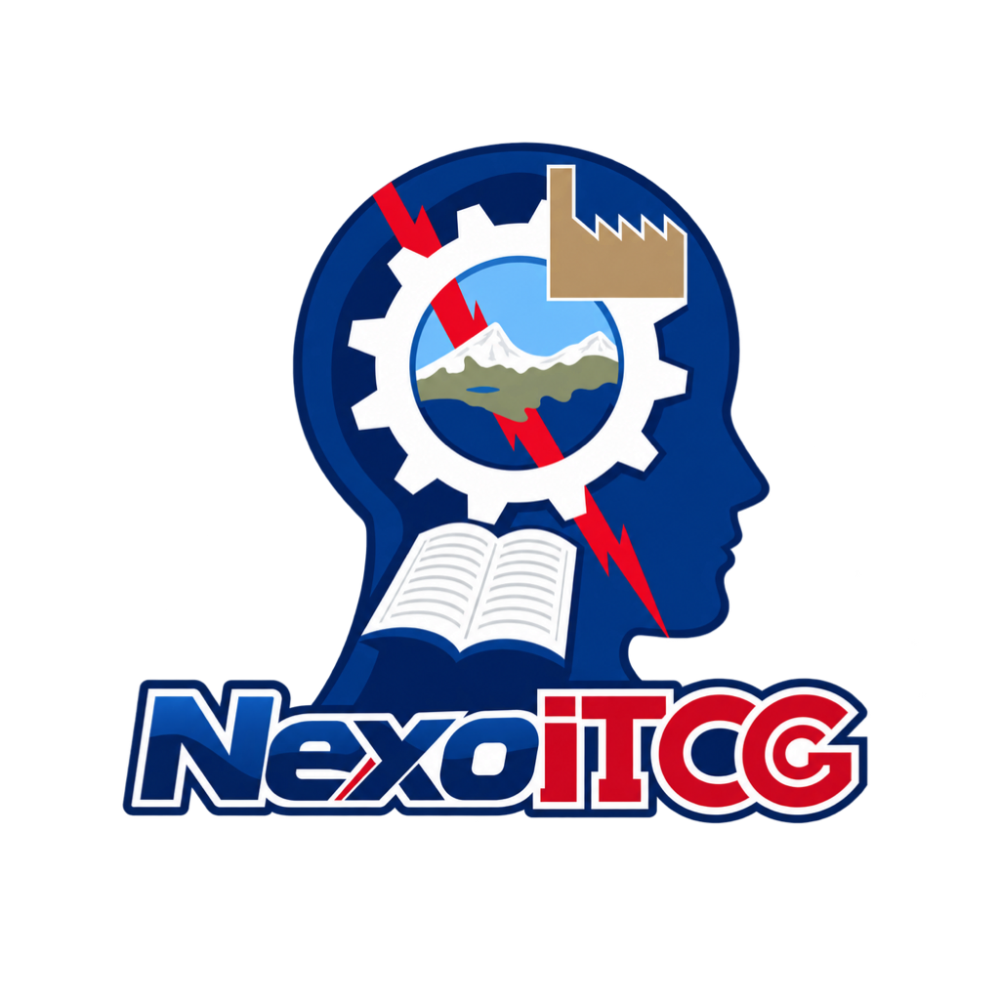

NexoITCGTU VIDA ESCOLAR
AVISOS
Tu escuela, al día.
Recibe novedades de Moodle, MindBox y BlinkLearning y abre NexoITCG para verlas.
MoodleMindBoxBlinkLearning
Preparando este dispositivo…
Abrir NexoITCG
AVISOS
Recibe novedades de Moodle, MindBox y BlinkLearning y abre NexoITCG para verlas.
Preparando este dispositivo…
Abrir NexoITCG